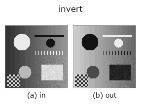

gray op• 데이터 종류: image → image
• 호출: fullseye.apply(img, "invert", a=0.5, b=0.5)(2-D 는 이미지 1 장 + 스칼라 노브 2 개 a,b∈[0,1] 모델)
• HALCON 대응: invert_image(의미·매개변수는 HALCON 레퍼런스가 참고가 됩니다)

*그림은 128×128 합성 입력에서 실제로 실행한 출력. 왼쪽이 입력, 오른쪽이 출력. 점군은 위에서 본 산점도(밝기 = z), 1-D 열은 꺾은선, 볼륨은 z 방향 최대값 투영, 동영상은 가운데 프레임, 복소 영상은 진폭이며, 그림이 되지 않는 반환값은 값 자체를 표시한다.*
*노브 a 는 출력을 바꾸지 않는다(실측: 0.1 / 0.5 / 0.9에서 동일).*
*노브 b 는 출력을 바꾸지 않는다(실측: 0.1 / 0.5 / 0.9에서 동일).*
다른 영상에서도(합성 장면 / 사진 / 동전. 윗줄이 입력, 아랫줄이 그 출력. 노브는 기본값):
▸ invert: 다른 입력 이미지 (문서 사이트)
*4열은 컬러 (H,W,3) 입력. 이 op는 채널을 넘나들지 않고 컬러를 다룰 수 있다(색 채널을 세 번째 공간축으로 컨볼루션하지 않음).*
계조 반전(네거티브-포지티브 반전). HALCON의 invert_image(Invert an image.)에 해당한다.
1 - clip(v,0,1)을 반환할 뿐이다. a, b는 사용하지 않는다.
• 입력을 먼저 [0,1]로 clip한 뒤 반전하므로, 범위 밖의 값은 포화된 다음 반전된다(1.3 → 0, -0.2 → 1). 값 범위가 [0,1]이 아닌 배열은 앞단에서 정규화해 둘 것.
• 반환값은 입력과 같은 모양의 float, 값 범위 [0,1]. NaN은 clip을 그대로 통과해 NaN인 채로 반환된다(ops.py에 직접 등록된 op라서 backend의 guard가 걸리지 않는다 —— 비유한값을 막고 싶다면 fullseye.apply를 거쳐 on_error="raise").
• 2번 적용하면 원래대로 돌아온다(대합). region에 적용하면 전경/배경이 뒤바뀌지만, region용으로는 invert_region(여집합)이 있다.
• 쓰임새: 어두운 대상을 threshold로 "밝은 쪽"으로 잡기 전의 반전, dc_rpca_sparse의 어두운 잔차나 xpil_contour의 검은 선을 양의 신호로 만들기, 거리 변환의 "안쪽일수록 어둡다"를 "안쪽일수록 밝다"로 바꿔 읽기.
• gallery2d_gray_arith 패밀리 가이드
• 샘플 데이터 카탈로그(DL URL / 라이선스) —— 2-D 는 skimage.data(BSD/public)+ 합성, 3-D 는 실데이터 소스(Stanford/PDS 등)의 DL URL.
• 연산자의 내력·참고문헌 —— 이 연산자 족의 바탕이 된 연구/기법의 출처.
• 알고리즘의 정전(저자·연도)과 용도는 위의 패밀리 사용 가이드에 적혀 있습니다.
아래 프로그램은 실제로 실행됨을 확인했습니다(그림과 같은 입력). Studio 도움말에서는 이 블록이 버튼이 되어 즉시 불러와 실행할 수 있습니다.
invert 0.50 0.50
• gallery2d_gray_arith — py -3.11 examples/gallery2d_gray_arith.py
• genspark_external_review — py -3.11 examples/genspark_external_review.py
• poc_tacscalib_sphere_lut — py -3.11 examples/poc_tacscalib_sphere_lut.py
image 를 입력으로 받는 것)identity · gaussian · mean_box · bilateral · unsharp · median · min_filter · max_filter
gray)gamma · quantize_uniform · quantize_lloyd_max · quantization_error · dither_ordered · dither_floyd_steinberg · companding_mu_law · banding_map
*Provenance: ops.py — 2D 연산자 레지스트리. 이 op 노트는 tools/opdocs.py md 가 자동 생성합니다(직접 편집하지 마세요).*
© 2026 Kazufumi Furuse — Fullseye operator documentation. Licensed under Apache-2.0.